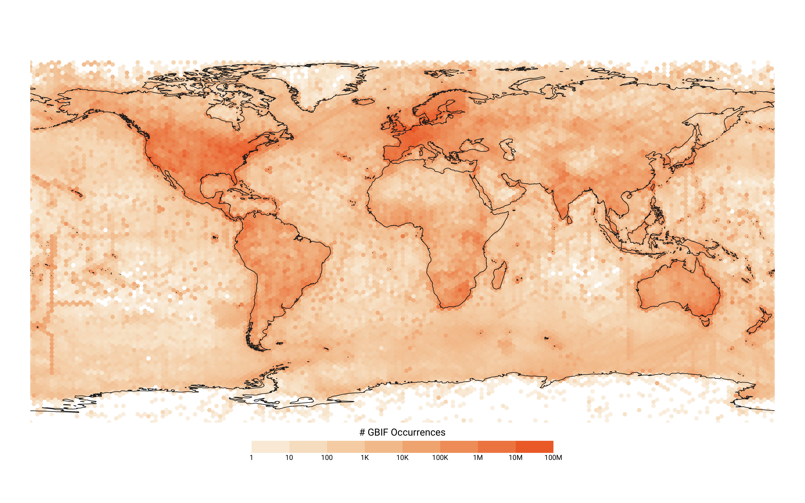

# This is a code block with a comment
library(package-name)
library(palmerpenguins)
penguins |>
dplyr::group_by(species)Introduction
Data cleaning is a process that biologists and ecologists invariably have to engage with before they can answer questions using data. Depending on the sources of the data, it may be necessary to standardise formats, correct spelling errors, and resolve taxonomic inconsistency and spatial errors before these data can be analysed. The “correct” degree of data cleaning will depend on the project and the questions being asked of the data, so there is no one-size-fits-all approach. There are, however, some common processes that will be broadly applicable to many data cleaning workflows. This book consolidates those processes into a resource for users who are interested in understanding how to clean their datasets.

Who is this book for?
If you are new to working with geo-referenced biodiversity data in R, or are looking for a quick reference to data cleaning processes or concepts in R, then this book is for you! By learning how to download and apply common data cleaning steps, you will also develop a better understanding of biodiversity data, and common issues to be aware of.
What this book covers
In this book, we provide an overview of a typical data cleaning workflow for open-access geo-referenced biodiversity data—from acquisition, to error identification, to correction. These processes are broken down into three main sections. The chapters within each section include practical guidelines, example R code, and additional resources that may aid with each data cleaning step.
This book attempts to fill a niche between works that discuss data cleaning principles without using code (e.g., (Chapman, 2005)) and articles that describe technical solutions to computational problems (e.g., the bdc toolkit; (Ribeiro et al., 2024)).
Although the principles we cover to clean data apply to many types of data (not just biodiversity data), our perspective is strongly focused on cleaning “unstructured” occurrence data with one row per observation (as provided by the Global Biodiversity Information Facility (GBIF) and it’s partner nodes).
What we don’t cover
The areas of research and uses of biodiversity data are many and varied. Here we have focused on just one facet—downloading and cleaning geo-referenced occurrence/biodiversity data. As such, this book will not cover:
- Hypothesis testing or experimental design
- How to clean environmental data that is not occurrence / biodiversity data (e.g. trait data)
- How to perform analyses (e.g. species distribution modelling)
Requirements
User accounts
We will be working with point-based species occurrence data retrieved from online infrastructures such as the Global Biodiversity Information Facility (GBIF) and the Atlas of Living Australia (ALA). To retrieve data from these services, you will need to create a user account, if you do not already have one:
R
To get the most out of this book, a basic knowledge of using R and RStudio is recommended. We use R because it is commonly used across ecological projects and has a rich ecosystem of packages for data cleaning and visualisation. If you are new to R or need a refresher, there are many amazing and freely available resources available online. Data Analysis and Visualisation in R for Ecologists and R for Data Science are both excellent starting points.
Download R from CRAN, selecting the version that matches your operating system, and install it on your device.
RStudio
RStudio is an integrated development environment (IDE) for R programming. RStudio provides a range of tools to make working with R easier, and you can download and install RStudio for your operating system here.
Other excellent IDEs like Visual Studio Code can be good alternative options depending on your preferences.
Packages
We use a range of R packages throughout the book, primarily for data cleaning and visualisation. These packages will be typically noted at the beginning of a chapter, and occasionally a code block. To access biodiversity data we will be primarily working with the galah package. If you have collected your own occurrence data, you should still find this book useful.
A list of the most common packages in this book can be found on the Packages page.
Conventions
Code blocks
Examples throughout this book are accompanied by code blocks. These blocks show how a particular task was executed in R:
You can copy code by clicking the button in the top right corner of a code block.
Code line comments
Some code blocks have circled numbers near the right edge of the code block. You can hover over these numbers to read additional context about that specific line of code.
penguins |>
dplyr::group_by(species) |>
dplyr::summarise(mean_bill_length = mean(bill_length_mm))- 1
-
This line of code groups
penguinsdata by each distinct value in the variablespecies - 2
-
This line of code summarises each species’ mean bill length, saving the output in a new column
mean_bill_length
Throughout this book, we use “pipes” in our code (|>, or %>% from the magrittr package). Pipes allow you to chain multiple functions sequentially to an object or a dataset. Pipes can be read as saying “and then”. For example, the code block above can be read as “Get data penguins, and then group by species, and then summarise (setting mean_bill_length to contain the mean of bill_length_mm).”
How to contribute
Suggestions, contributions, questions or other feedback to improve this book are welcome. We recommend opening an issue in our GitHub repository first to discuss improvements or potential changes. More helpful information about licensing and contributing guidelines can be found here.